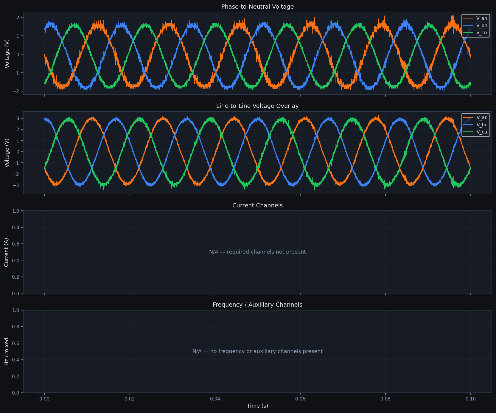
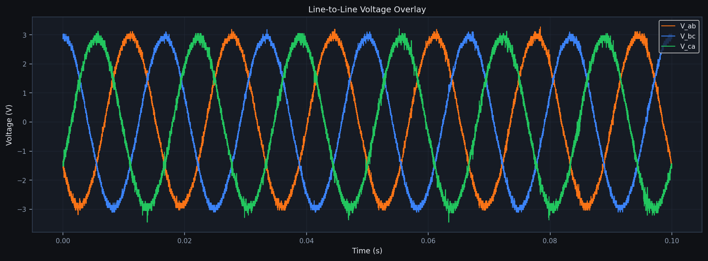

Offline recorded-session analysis · Standards-inspired engineering checks · IEEE 2800-2022 Inspired Subset


| Section | Metric | Measured Value | Units | Notes |
|---|---|---|---|---|
| Phase Voltage | v_an RMS | 1.203 | V | THD 1.003 % |
| Phase Voltage | v_bn RMS | 1.217 | V | THD 1.073 % |
| Phase Voltage | v_cn RMS | 1.198 | V | THD 1.027 % |
| Line Voltage | v_ab RMS | 2.076 | V | |
| Line Voltage | v_bc RMS | 2.087 | V | |
| Line Voltage | v_ca RMS | 2.071 | V | |
| Frequency | Mean | 60.0199 | Hz | estimated_from_v_an |
| Frequency | Min / Max | 59.8399 / 60.2531 | Hz | Deviation vs 60 Hz: 0.2531 Hz |
| Balance | Voltage imbalance | 0.946 | % | Max RMS deviation: 0.011 V |
| Events | Voltage sag count | 0 | events | |
| Events | Frequency excursion count | 0 | events | |
| Events | Overcurrent count | N/A | events | No phase current channels available |
| Check | Measured | Threshold | Units | Result | Standard / Profile Reference | Notes |
|---|---|---|---|---|---|---|
| Voltage regulation | 0.0100 | [0.975, 1.025] | p.u. | FAIL | IEEE 2800-2022 (inspired subset) | Reference presentation threshold: 1.0 ± 0.025 p.u. |
| Ride-through — Minimum 3φ Voltage | 0.8480 | 60.0000 | V | FAIL | IEEE 2800-2022 (inspired subset) | Minimum three-phase averaged voltage = 0.85 V (at t = 0.000 s). Threshold = 60.00 V. FAIL — voltage collapsed below the ride-through threshold. |
| Frequency deviation | [59.839928, 60.253063] | [59.5, 60.5] | Hz | PASS | IEEE 2800-2022 (inspired subset) | Source: estimated_from_v_an |
| Recovery — No Sustained Under-voltage | 0.8480 | 72.0000 | V | FAIL | IEEE 2800-2022 (inspired subset) | Worst-window minimum = 0.85 V at t = 0.000 s. Threshold = 72.00 V. FAIL — sustained under-voltage observed. |
| THD | 1.0731 | 5.0000 | % | PASS | IEEE 2800-2022 (inspired subset) | IEEE 519-2014 inspired reference limit |
| Phase Imbalance | 0.9461 | 5.0000 | % | PASS | IEEE 2800-2022 (inspired subset) | Voltage imbalance = 0.946% (max RMS deviation 0.011 V). |
| Overcurrent | N/A | N/A | A | N/A | IEEE 2800-2022 (inspired subset) | Project engineering threshold derived from baseline current |
| Fault ride-through | N/A | N/A | V | N/A | IEEE 2800-2022 (inspired subset) | No fault/status channel in dataset |
| Event | Start (s) | Duration (s) | Channel | Severity | Description |
|---|---|---|---|---|---|
| No events detected. | |||||
| Field | Value |
|---|---|
| Source path | C:\Users\Administrator\OneDrive - Gannon University\Spring 2026\Senior Design\RigolDS0.csv |
| Source SHA-256 | 6b1acd3bc691dbc3934b1e20f3ef3120b417c7d291004fa281ae6084ba8727eb |
| Mapped channels | v_an, v_bn, v_cn |
| Derived channels | v_ab, v_bc, v_ca |
| Scale factors | {} |
| Compliance profile | ieee_2800_inspired |
| Normalized CSV mode | preview_downsampled |
| Normalized CSV note | Preview CSV downsampled to 50,000 rows for package size; metrics computed on full-resolution data. |
| App version | 1.0.0 |
| Git commit | 8822bbeb41248a8d433b83ded4277cf2c3170251 |